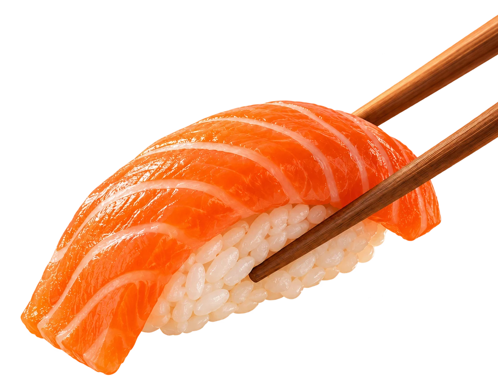
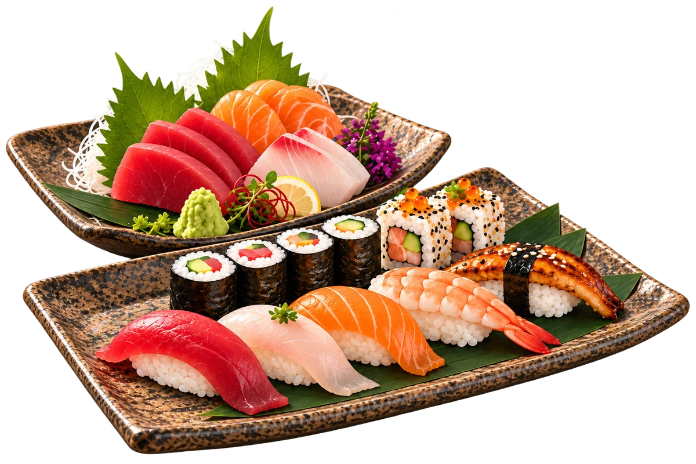
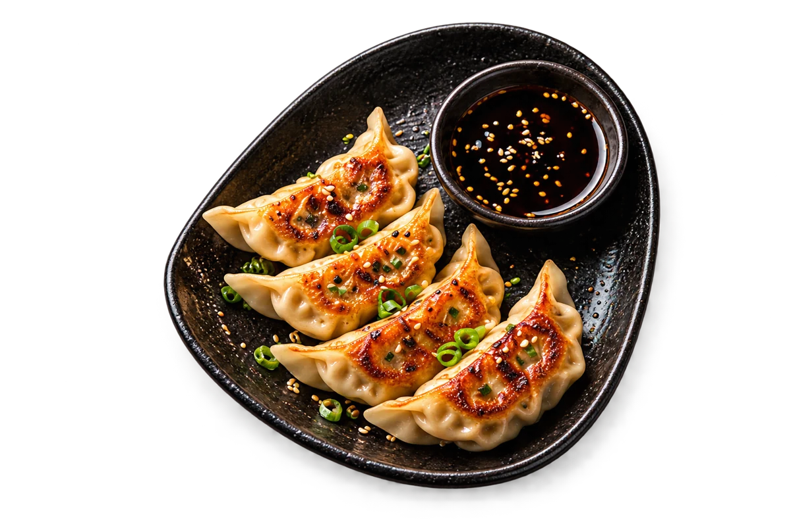

BELO HORIZONTE · DESDE 1987
Tradição que se
sente à mesa.
Uma história de família. O cuidado japonês em cada corte.
O
prazer de descobrir o sabor em sua essência.
IDENTIDADE NAKA.
01 / ANTES DA PRIMEIRA MORDIDA
O primeiro sabor
vem pelos olhos.
O brilho do salmão. A delicadeza do arroz. Um encontro de texturas que faz a próxima mordida começar na imaginação.
Conheça o nigiri de salmão
Um sabor de cada vez.
02 / ENCONTRE O SEU SABOR
Uma escolha.
Muitos encontros.
Dos pequenos começos ao conforto de uma tigela.
Escolha por onde sua experiência vai começar.

Conhecer o prato盛り合わせ
Combinado Naka
Sushis, makis e sashimis em uma seleção que convida a descobrir diferentes cortes e texturas.
Consulte a casa握り鮨
Nigiri de salmão
A delicadeza de uma fatia de salmão sobre o arroz japonês moldado em uma pequena peça.
Consulte a casa
Conhecer o prato餃子
Gyoza suíno
Pequenos pastéis de carne suína e legumes, com superfície dourada e recheio macio.
Consulte a casa Conhecer o prato
Conhecer o prato ラーメン
Lámen
Macarrão em caldo quente com carne suína, ovo e acompanhamentos japoneses.
Consulte a casaRaízes japonesas.
Memórias de Belo Horizonte.
03 / A ESSÊNCIA PERMANECE
De família.
De raiz.
Do jeito Naka.
A história do Sushi Naka é a história da família Nakao à mesa de Belo Horizonte. Desde 1987, a casa faz da tradição japonesa sua identidade: no cuidado com o corte, nos pratos frios e quentes e no respeito ao ingrediente.
Anti-fusion por princípio.
Japonesa por essência.
Aqui, a técnica está a serviço do sabor. O arroz tem seu lugar, o peixe tem sua textura e cada preparo carrega o cuidado de uma cozinha com raízes.
Encontre a tradição no cardápio04 / O ENCONTRO ACONTECE AQUI
Da nossa história
para a sua mesa.
Venha com tempo. Escolha a companhia.
Deixe o primeiro sabor acontecer.
Avenida Afonso Pena, 2828 · Savassi
Belo Horizonte, MG
Terça a domingo · 11h às 14h e 18h às 23h
Segunda-feira · fechado